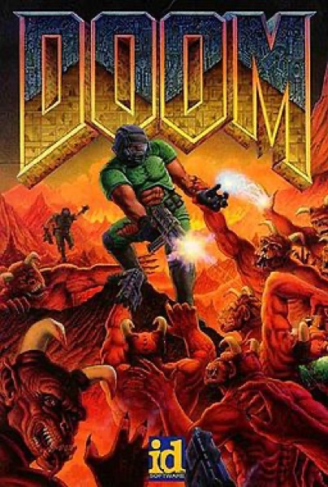

Shooter · 1993
Doom
Shareware, deathmatch and modding: three decades of PC culture in one download.

Cover: Wikipedia: Doom (1993 video game)
Facts
- Released
- 1993-01-01
- Genre
- FPS
- Category
- Shooter
- Platforms
- Mobile, Nintendo, PC, PlayStation, Retro home computer, Sega, Xbox
- Developers
- Id Software, Nerve Software
- Publishers
- Activision, Atari, Atari, Inc., Ocean Software, Sega, WMS Industries